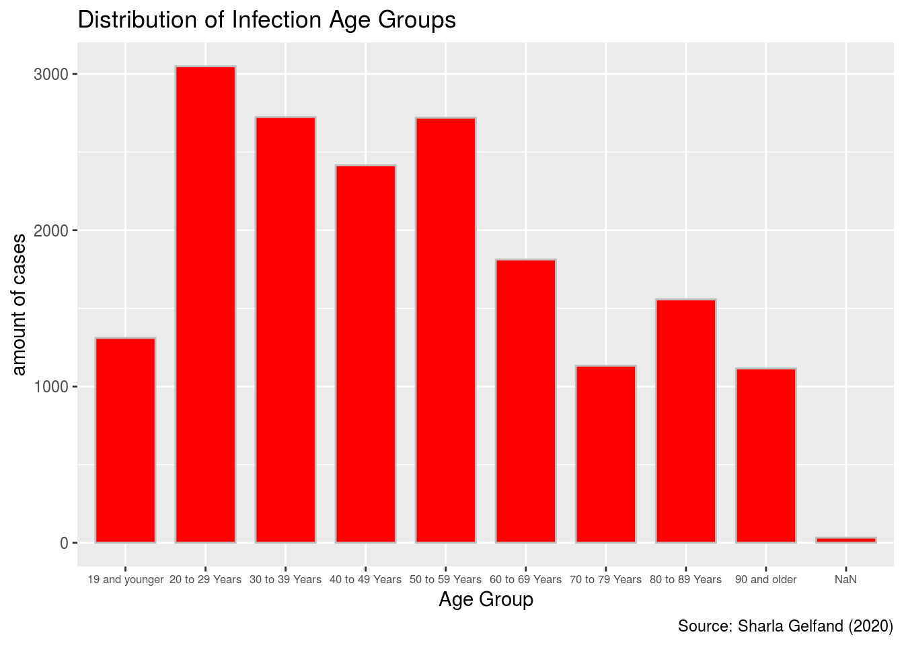
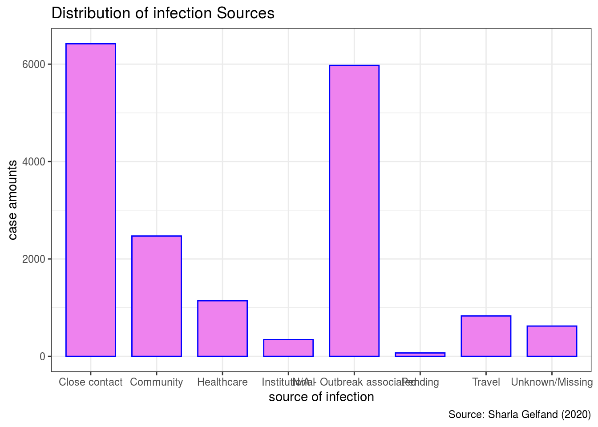

Abstract
This research mainly studies which groups of people more likely to be infected in COVID-19. I use ggplot to draw two histograms include two variables which are Age Group and Source of Infection. Obviously, the result shows that the group of people with age around 20-60 years and the group of people with close contacts are much easier to get infected in COVID-19. My conclusion is that if you are the one in 20-60 years old group you need to be careful in this special COVID-19 period and everyone try to reduce close contact with others. (We use Wickham et al. (2019), Gelfand (2020), Wickham, Hester, and Chang (2020))
Introduction
There are a lot of interesting data packages from Opendatatoronto website. I pick “COVID-19” data packages because I want to find out the important elements which will cause the virus infection so that we can prevent from getting infected. I use list_packages function to get all packages of opendatatoronto and I use search_packages to get a COVID-19 package. Then I use get_resource to show a dataframe about COVID-19. I choose two variables in this dataframe to do my research which is “Age group” and “Source of infection”. The main findings I finally get are that “age” and “close contact” are the primary factors to COVID-19.
From the below graph called Age Group, we can compare different age groups. Each group from 20-29, 30-39, 40-49, 50-59, 60-69 years has over 2000 cases. These COVID-19 cases have almost 75% over all age groups. This means people who are from 20 - 69 years old are most easily getting infected by Coronovirus. So if you are in these age groups, you should pay attention on going outside and contacting with your friends, your family or any other people. I recommend you at least wearing a mask to prevent the possible infection. Although the other groups like 19 or younger one has not so many cases happened, it doesn’t mean youths or teenagers can ignore precaution. There’s another graph which called Source of Infection. This graph focus on different sources which cause infection. The “close contact” count is at least 3 times to other sources except for “N/A Outbreak Associated”. The percentage is approximately 60%. I used to think travel is one main source but I’m totally wrong. The cases caused by travel is only 8% of all cases. Perhaps this is because every country has serious restriction on come in or out right now. So it’s obvious that anyone wants to have a close contact with friends, family or other people is easily getting infection. I hope after this report, you can take a few seconds to thinks about if you should stay at home to keep safe or you don’t care. Also if you or your family member is between 20 yrs old and 70 yrs old, will you realize that you are in dangerous group and take some precautions to prevent COVID-19. I wish I can make a positive change on COVID-19!
This is my first statistics report include some technical issue such as my first time using ggplot to draw a statistic histogram. It’s really interesting because it can show data intuitively with some magic functions. There are some weakness I want to improve in future. For example, the texts on axes are overlapping in the graph called “source of infection”. I don’t find out how to fix this problem so I apologize for that. I would like to add some mathematics notations on graph such as percentages of each bar. That way can make my audience have a more clear vision on data. My data graph is so easy to read and each graph only contain one variable. In future, I want to do some challenges on graphing such as pie chart. I want to learn more skill besides ggplot so that I can make a complex statistics graph includes more variables. There is another weakness in this report. Since the data will be completely refreshed and overwritten on a weekly basis, so the data has limitations on its truth and accuracy. There are also some N/A data we don’t know which may lead the data to less accuracy. So if I want to have a more precious anyalization, I will use future refreshed data to compare with this data. At last, thank you for take your time to read my report. Wish you all the best!
Opendatatoronto data
Opendatatoronto data contains 11 columns with different variables and 50 rows which mean there are 50 packages we can choose to analysis. I use list_packages() function to get following list of whole Torontodata packages. I’ll specifically choose “COVID-19 Cases in Toronto” package to do a statistic research.
packages <- list_packages()
packages
## # A tibble: 50 x 11
## title id topics civic_issues publisher excerpt dataset_category
## <chr> <chr> <chr> <chr> <chr> <chr> <chr>
## 1 Dail… 8a6e… City … Affordable … Shelter,… "Daily… Table
## 2 Stre… 1db3… City … Mobility Transpor… "Trans… Map
## 3 Stre… 74f6… City … <NA> Transpor… "Publi… Map
## 4 Stre… 821f… City … <NA> Transpor… "Publi… Map
## 5 Stre… ccfd… City … <NA> Transpor… "Poste… Map
## 6 Stre… cf70… City … <NA> Transpor… "Poste… Map
## 7 Stre… 3944… City … <NA> Transpor… "Litte… Map
## 8 Stre… 99b1… City … <NA> Transpor… "Infor… Map
## 9 Stre… 71e6… Trans… <NA> Transpor… "Bike … Map
## 10 Stre… 0c4e… City … <NA> Transpor… "Bench… Map
## # … with 40 more rows, and 4 more variables: num_resources <int>,
## # formats <chr>, refresh_rate <chr>, last_refreshed <date>## # A tibble: 1 x 4
## name id format last_modified
## <chr> <chr> <chr> <date>
## 1 COVID19 cases e5bf35bc-e681-43da-b2ce-0242d00922ad CSV 2020-09-23Data
COVID_19_statistics is a dataframe which contains 18 columns with different variables which are related to COVID-19 infection. Each row is a summarize of individual case information(i.e there are totally 16,942 cases). I’m more interested in “Age Group” and “Source of Infection” So I’ll briefly introduce what these two columns are. The “Age Group” contains 10 different groups of people with different age periods which are ≤19, 20-29, 30-39, 40-49, 50-59, 60-69, 70-79, 80-89, 90+, unknown(blank). The “Source of Infection” contains most likely way that sporadic cases acquired their COVID-19 infection. It includes Travel, Close contact with a case, Institutional setting, Healthcare setting, Community, Pending, Unknown/missing and N/A. I will draw two graphs for two separate variables so that we can see which age groups people and what sources of Infection are more likely to get infected by COVID-19. (We use Tierney (2017), Waring et al. (2020))
## # A tibble: 17,872 x 18
## `_id` Assigned_ID `Outbreak Assoc… `Age Group` `Neighbourhood … FSA
## <int> <int> <chr> <chr> <chr> <chr>
## 1 143647 1 Sporadic 50 to 59 Y… Willowdale East M2N
## 2 143648 2 Sporadic 50 to 59 Y… Willowdale East M2N
## 3 143649 3 Sporadic 20 to 29 Y… Parkwoods-Donal… M3A
## 4 143650 4 Sporadic 60 to 69 Y… Church-Yonge Co… M4W
## 5 143651 5 Sporadic 60 to 69 Y… Church-Yonge Co… M4W
## 6 143652 6 Sporadic 50 to 59 Y… Newtonbrook West M2R
## 7 143653 7 Sporadic 80 to 89 Y… Milliken M1V
## 8 143654 8 Sporadic 60 to 69 Y… Willowdale West M2N
## 9 143655 9 Sporadic 50 to 59 Y… Willowdale East M2N
## 10 143656 10 Sporadic 60 to 69 Y… Henry Farm M2J
## # … with 17,862 more rows, and 12 more variables: `Source of Infection` <chr>,
## # Classification <chr>, `Episode Date` <chr>, `Reported Date` <chr>, `Client
## # Gender` <chr>, Outcome <chr>, `Currently Hospitalized` <chr>, `Currently in
## # ICU` <chr>, `Currently Intubated` <chr>, `Ever Hospitalized` <chr>, `Ever
## # in ICU` <chr>, `Ever Intubated` <chr>#install.packages("visdat")
library(visdat)
#install.packages("skimr")
library(skimr)
library(ggplot2)
visdat::vis_dat(COVID_19_statistics)
skimr::skim(COVID_19_statistics)| Name | COVID_19_statistics |
| Number of rows | 17872 |
| Number of columns | 18 |
| _______________________ | |
| Column type frequency: | |
| character | 16 |
| numeric | 2 |
| ________________________ | |
| Group variables | None |
Variable type: character
| skim_variable | n_missing | complete_rate | min | max | empty | n_unique | whitespace |
|---|---|---|---|---|---|---|---|
| Outbreak Associated | 0 | 1 | 8 | 19 | 0 | 2 | 0 |
| Age Group | 0 | 1 | 3 | 14 | 0 | 10 | 0 |
| Neighbourhood Name | 0 | 1 | 3 | 35 | 0 | 141 | 0 |
| FSA | 0 | 1 | 3 | 3 | 0 | 97 | 0 |
| Source of Infection | 0 | 1 | 6 | 25 | 0 | 8 | 0 |
| Classification | 0 | 1 | 8 | 9 | 0 | 2 | 0 |
| Episode Date | 0 | 1 | 10 | 10 | 0 | 217 | 0 |
| Reported Date | 0 | 1 | 10 | 10 | 0 | 212 | 0 |
| Client Gender | 0 | 1 | 4 | 11 | 0 | 5 | 0 |
| Outcome | 0 | 1 | 5 | 8 | 0 | 3 | 0 |
| Currently Hospitalized | 0 | 1 | 2 | 3 | 0 | 2 | 0 |
| Currently in ICU | 0 | 1 | 2 | 3 | 0 | 2 | 0 |
| Currently Intubated | 0 | 1 | 2 | 3 | 0 | 2 | 0 |
| Ever Hospitalized | 0 | 1 | 2 | 3 | 0 | 2 | 0 |
| Ever in ICU | 0 | 1 | 2 | 3 | 0 | 2 | 0 |
| Ever Intubated | 0 | 1 | 2 | 3 | 0 | 2 | 0 |
Variable type: numeric
| skim_variable | n_missing | complete_rate | mean | sd | p0 | p25 | p50 | p75 | p100 | hist |
|---|---|---|---|---|---|---|---|---|---|---|
| _id | 0 | 1 | 152582.50 | 5159.35 | 143647 | 148114.75 | 152582.5 | 157050.25 | 161518 | ▇▇▇▇▇ |
| Assigned_ID | 0 | 1 | 9026.35 | 5248.05 | 1 | 4482.75 | 8984.5 | 13529.25 | 18202 | ▇▇▇▇▇ |
Graph Discussion - Age Group
This graph shows Age Group. The x-axis shows ten different groups of age. The y-axis shows the amount of cases. Obviously, 20-69 years columns dominate the whole graph. Let’s take a quick calculation for the mean of this bar chart. You’ll find the mean value of cases for all groups is 1649.2 cases. So from the graph, we can see clearly that the bars with value over 1649.2 are 20-29 years, 30-39 years. 40-49 years, 50-59 years and 60-69 years. The graph is mainly skewed to these 5 groups. It means these groups of people are more likely to be infected by COVID-19. Therefore any people who are in these groups should especially take some precautions to prevent the infection. The left 5 bars have less risks to get infection. But you still need to pay attention!
COVID_19_statistics %>%
ggplot(aes(x=`Age Group`))+
geom_bar(width = 0.75, colour="grey",fill="red")+
theme(axis.text.x = element_text(size=6.25)) +
labs(x="Age Group", y="amount of cases",
title = "Distribution of Infection Age Groups",
caption = "Source: Sharla Gelfand (2020)")
Graph Discussion - Source of Infection
This Graph shows the relationship between COVID-19 infection cases and 8 sources of infection. Obviously, the distribution of barchart is heavily skewed to “close contact” except for “N/A”. The mean value of each group should be 16942/8=2177.5 cases. The ‘close contact’ bar is almost 3 times to mean value. Although the government has published the community population restriction policy, the graph still tells us more people are getting infection because of they having close contacts with their friends, their families, their business partners, their workmates, etc. It’s so hard to control every people stay home to reduce the infection. The second bar seems like also over mean value which is “community”. This is almost same principle to close contacts. In a word, if we continue on having communication with others, we will easily get infected. I know it’s hard for everyone to get rid of social distance, but let’s try our best to keep away from corona virus! (We use Wickham (2016))
COVID_19_statistics %>%
ggplot(aes(x= `Source of Infection`))+
geom_bar(width = 0.75, colour="blue", fill="violet")+
labs(x="source of infection", y="case amounts",
title= "Distribution of infection Sources",
caption="Source: Sharla Gelfand (2020)")+
theme_bw()
References
Gelfand, Sharla. 2020. Opendatatoronto: Access the City of Toronto Open Data Portal.
Tierney, Nicholas. 2017. “Visdat: Visualising Whole Data Frames.” JOSS 2 (16): 355. https://doi.org/10.21105/joss.00355.
Waring, Elin, Michael Quinn, Amelia McNamara, Eduardo Arino de la Rubia, Hao Zhu, and Shannon Ellis. 2020. Skimr: Compact and Flexible Summaries of Data.
Wickham, Hadley. 2016. Ggplot2: Elegant Graphics for Data Analysis. Springer-Verlag New York. https://ggplot2.tidyverse.org.
Wickham, Hadley, Mara Averick, Jennifer Bryan, Winston Chang, Lucy D’Agostino McGowan, Romain François, Garrett Grolemund, et al. 2019. “Welcome to the tidyverse.” Journal of Open Source Software 4 (43): 1686. https://doi.org/10.21105/joss.01686.
Wickham, Hadley, Jim Hester, and Winston Chang. 2020. Devtools: Tools to Make Developing R Packages Easier.